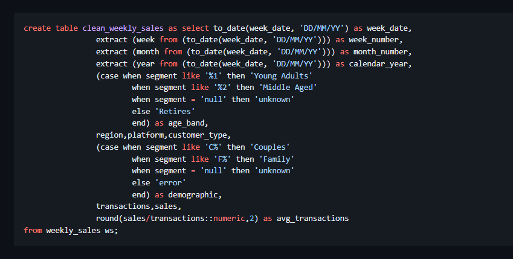
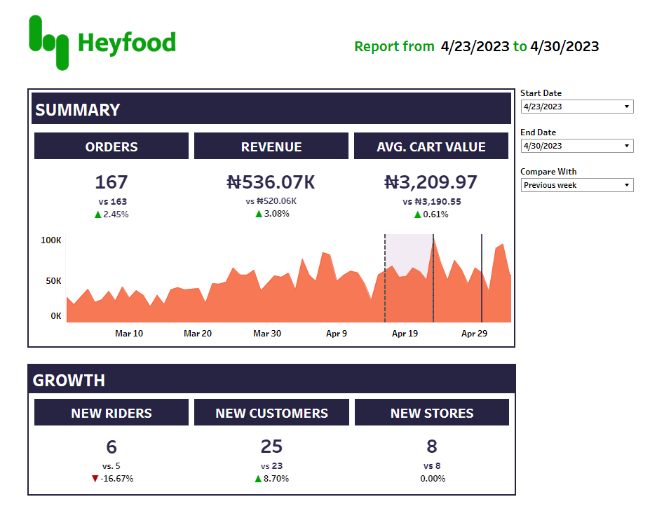
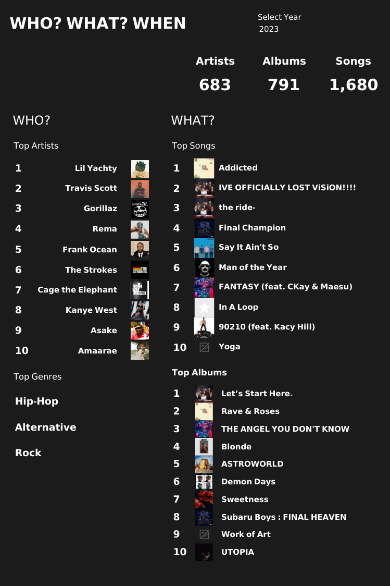

I am a passionate data analyst with a strong background in data wrangling, data visualization and analysis.
Ive been responsible for creating reports using various methods to make sense of data and provide data backed decisions
I enjoy working with people and learning new things. I also possess excellent communication and team skills which helps me thrive as a data professional

I used SQL to perform complex queries to analyze and draw insights.
This involved cleaning the data, summarizing it and doing a Before-After Analysis to track improvements or declines after a business change.

I am adept at creating dashboards. I have created a vareity of dashboards to track business performance and compare various periods to track performance

This project involved accessing my music listening history through the Last.fm API using python, joining the data from various endpoints to create a rich dataset, and then visualizing the data on Tableau.

This involved creating a dashboard for a coffee shop to track performance and top products to help with stock taking expansion opportunities